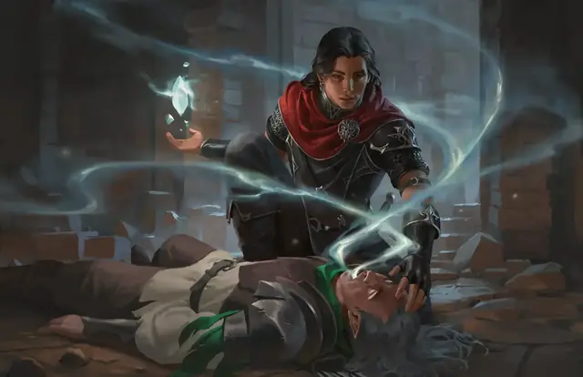

Оживление
Raise Dead
5 уровень, Некромантия

Время сотворения 1 час
Дистанция Касание
Компоненты В, С, М (бриллиант, стоящий как минимум 500 зм, расходуемый заклинанием)
Длительность Мгновенная
Классы Бард, Жрец, Паладин
Подклассы домен жизни (жрец), домен упокоения (жрец), алхимик (изобретатель)
Вы возвращаете к жизни мёртвое существо, которого касаетесь, при условии, что оно мертво не более 10 дней. Если душа этого существа может воссоединиться с телом и хочет этого, существо воскрешается с 1 хитом.
Это заклинание также нейтрализует все яды и исцеляет немагические болезни, бывшие у существа в момент смерти. Однако это заклинание не снимает магические болезни, проклятия и подобные эффекты; если их не снять до накладывания этого заклинания, они снова начнут действовать, когда существо оживёт. Это заклинание не может оживить Нежить.
Это заклинание исцеляет все раны, но не восстанавливает отсутствующие части тела. Если у существа отсутствуют жизненно важные части тела — например, голова — заклинание автоматически проваливается.
Возвращение к жизни — тяжёлое испытание. Цель получает штраф -4 ко всем броскам атаки, спасброскам и проверкам характеристик. Каждый раз, когда цель заканчивает продолжительный отдых, штраф уменьшается на 1, пока не исчезнет полностью.
Заклинания, возвращающие к жизни: возрождение • оживление • реинкарнация • воскрешение • истинное воскрешение